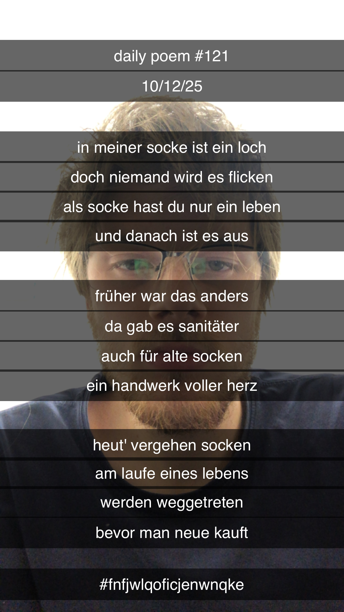

Von Löchern und den Socken, die sie umgeben
[121]In meiner Socke ist ein Loch,
Doch niemand wird es flicken;
Als Socke hast du nur ein Leben,
Und danach ist es aus.
Früher war das anders,
Da gab es Sanitäter,
Auch für arme alte Socken –
Ein Handwerk voller Herz.
Heut' vergehen Socken
Am Laufe eines Lebens,
Werden weggetreten –
Bevor man neue kauft.
